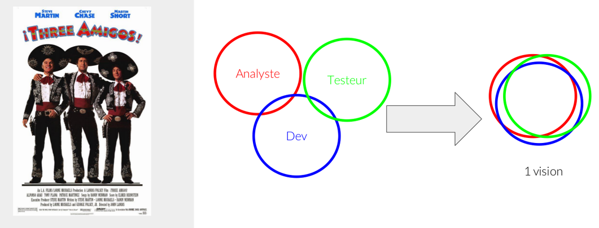
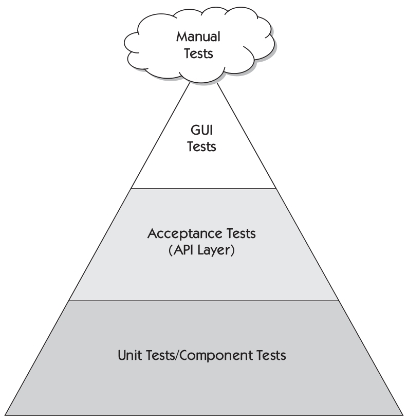
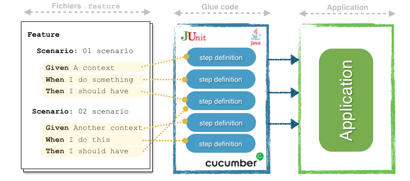
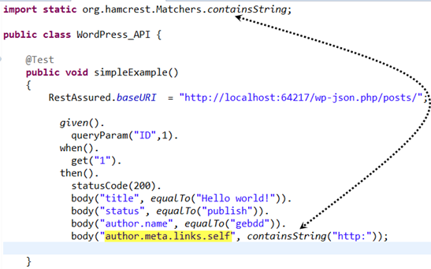
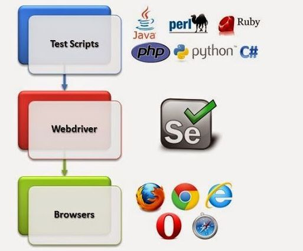

.featureFeatureLes étapes :
Given un contexteWhen un événement a lieuThen un résultat est observéFeature: Login / Logout
As a user, I can securely login and logout.
Scenario: Successful sign-in
Each users with valid credentials could login to the application.
Given The user "foobar" exists
When I login as "foobar" with a valid password
Then I should be able to login successfully
Scenario: Unsuccessful sign-in
Each users with wrong credentials could not login to the application.
Given The user "foobar" exists
When I login as "foobar" with a wrong password
Then I should see the error message "The login or password is wrong"
BA, dev et testeurs : partager la même vision
BDD praticable à tous les niveaux
Fichier features <-> Glue code <-> Application
Mise en oeuvre : JUnit + Cucumber
junit
junit
4.12
test
io.cucumber
cucumber-java
2.3.1
test
io.cucumber
cucumber-junit
2.3.1
test
Mise en oeuvre : arborescence projet
.
├── pom.xml
└── src
├── main
└── test
├── java
│ └── bdd
│ └── demo
│ ├── runner
│ │ └── TodoListRunnerTest.java
│ └── steps
└── resources
└── features
└── todolist.feature
Mise en oeuvre : test runner JUnit + options
import org.junit.runner.RunWith;
@RunWith(Cucumber.class)
@CucumberOptions( format={"pretty"},
features="classpath:features",
glue="bdd.demo.steps")
public class TodoListRunnerTest {
}
Exécuter les tests
mvn testAvant implémentation du glue code
1 Scenarios (1 undefined)
3 Steps (3 undefined)
0m0,013s
You can implement missing steps with the snippets below:
@Given("^The echo service is available$")
public void the_echo_service_is_available() throws Exception {
// Write code here that turns the phrase above into concrete actions
throw new PendingException();
}
@When("^I send the message \"([^\"]*)\"$")
public void i_send_the_message(String arg1) throws Exception {
// Write code here that turns the phrase above into concrete actions
throw new PendingException();
}
@Then("^I expect to get the case insensitive message \"([^\"]*)\"$")
public void i_expect_to_get_the_message(String arg1) throws Exception {
// Write code here that turns the phrase above into concrete actions
throw new PendingException();
}
Glue code
public class EchoSteps {
private EchoService service = null;
private Message message = null;
@Given("^The echo service is available$")
public void the_echo_service_is_available() throws Exception {
this.service = new EchoService();
}
@When("^I send the message \"([^\"]*)\"$")
public void i_send_the_message(String arg1) throws Exception {
this.message = service.strict(arg1);
}
@Then("^I expect to get the message \"([^\"]*)\"$")
public void i_expect_to_get_the_message(String arg1) throws Exception {
Assert.assertEquals("Erreur", arg1, this.message.getContent());
}
}
Après implémentation du glue code et en cas de succès
Running bdd.demo.runner.AppRunnerTest
Feature: Echo feature
This is a simple description of the echo feature.
Scenario: 01 - Simple echo scenario # features/echo.feature:5
The service aims to echo a given message
Given The echo service is available # EchoSteps.the_echo_service_is_available()
When I send the message "hello" # EchoSteps.i_send_the_message(String)
Then I expect to get the message "hello" # EchoSteps.i_expect_to_get_the_message(String)
1 Scenarios (1 passed)
3 Steps (3 passed)
Exemple
public class MyHooks {
@Before( order=2 )
public void beforeTheScenario() {
// do something. i.e : init data
}
@After
public void afterTheScenario(Scenario scenario) {
// do something. i.e : reset data, screenshot, notification
}
}
Mise en oeuvre : activation
@RunWith(Cucumber.class)
@CucumberOptions( format={"pretty"},
features="classpath:features",
glue={"bdd.demo.steps", "bdd.demo.hooks"})
public class TodoListRunnerTest {
}
Exemple
@pilotage
Feature
Statistiques d'activité
@business
Scenario: Rapport d'ouverture de comptes
@technical
Scenario: Consommation mémoire
Mise en oeuvre
@RunWith(Cucumber.class)
@CucumberOptions( format={"pretty"},
features="classpath:features",
glue="bdd.demo.steps",
tags={"@smoketest"})
public class SmokeTestRunnerTest {
}
Mise en oeuvre : Cucumber + Rest Assured
io.rest-assured
rest-assured
3.1.0
test
Rest Assured : librairie de test d'API REST
Mise en oeuvre : mise à jour des steps definition
public class EchoSteps {
private Message message;
private RequestSpecification echo;
@Before
public void setUp() {
RestAssured.baseURI = "http://localhost:8080/api/echo";
}
@Given("^The echo service is available$")
public void the_echo_service_is_available() throws Exception {
this.echo = RestAssured.given();
}
@When("^I send the message \"([^\"]*)\"$")
public void i_send_the_message(String arg1) throws Exception {
message = echo.get("strict/"+arg1).as(Message.class);
}
}
Selenium en local
Mise en oeuvre : Cucumber + Selenium (bindings Java)
org.seleniumhq.selenium
selenium-java
3.9.1
test
Mise en oeuvre : mise à jour des steps definition
public class EchoSteps {
@Before
public void init() {
driver = WebDriverHelper.getDriver();
}
@Given("^The echo service is available$")
public void the_echo_service_is_available() throws Exception {
driver.get("http://localhost");
}
@When("^I send the message \"([^\"]*)\"$")
public void i_send_the_message(String arg1) throws Exception {
driver.findElement(By.name("message")).sendKeys(msg);
driver.findElement(By.name("sendBtn")).click();
this.response = new WebDriverWait(driver, 100).until(
ExpectedConditions.elementToBeClickable( By.name("response") )
);
}
@Then("^I expect to get the message \"([^\"]*)\"$")
public void i_expect_to_get_the_message(String arg1) throws Exception {
Assert.assertEquals("Contenu non identique", arg1, this.response.getText());
}
}
Faire des copies d'écran en cas de scénario en erreur
public class EchoAppHooks {
@After("@gui")
public void afterTheScenario(Scenario scenario) throws Exception {
if ( scenario.isFailed() ) {
String timestamp = new SimpleDateFormat("dd-MM-yyyy_HH-ss").format(new Date());
String screenFileName = "/tmp/screenshot_" + timestamp + ".png";
final byte[] screenshot =
((TakesScreenshot) WebDriverHelper.getDriver())
.getScreenshotAs(OutputType.BYTES);
Files.write(
Paths.get(screenFileName),
screenshot
);
}
}
}